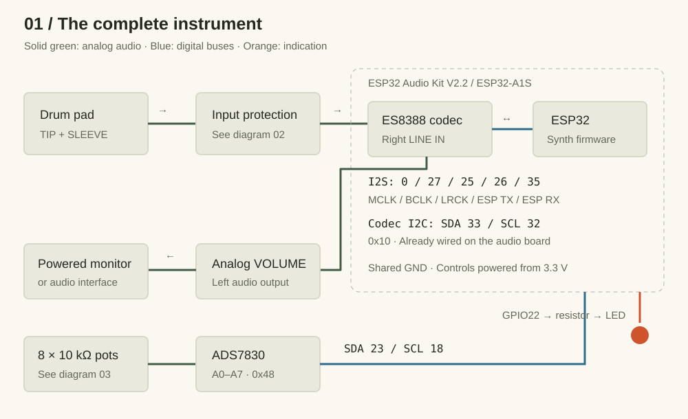
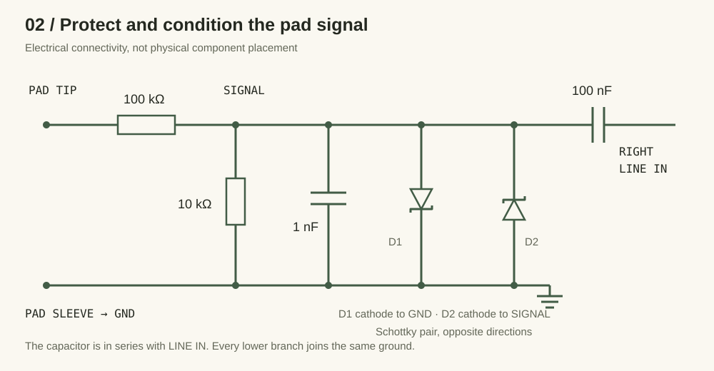
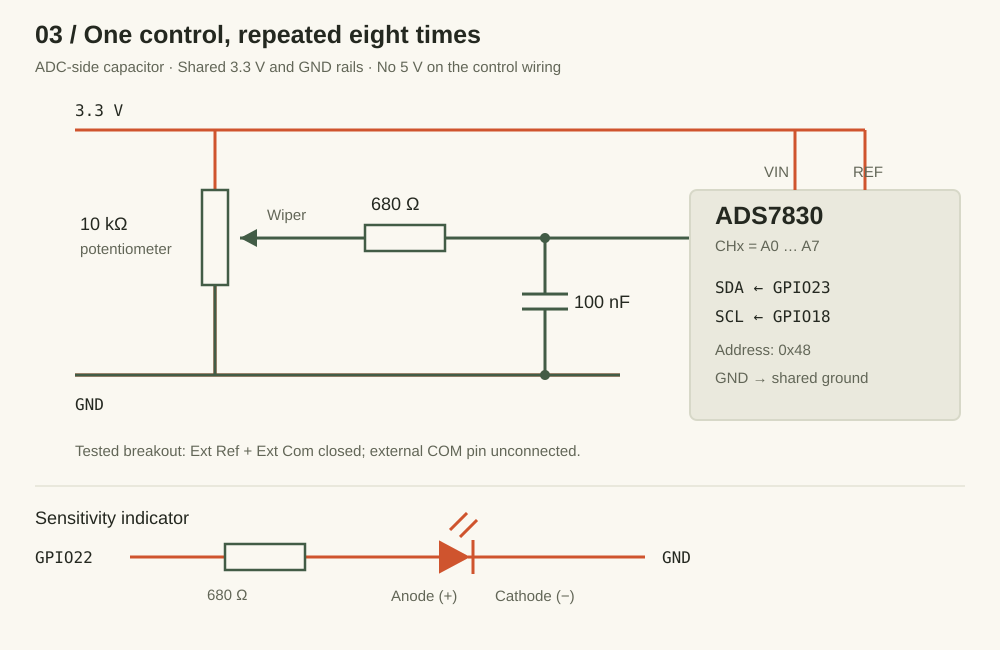

A strike goes in.
A new sound comes out.
RudeBox is a small drum synthesizer you play with an external electronic drum pad. Strike the pad and it produces a sound. Turn a knob and the next strike can become a low thump, a ringing tom, or a descending laser-like sweep.
The pad supplies the trigger and the strength of the hit. The firmware creates the sound mathematically: it does not play a recording of a drum. There is one voice, so an accepted new strike restarts the sound already playing.
Three jobs make the instrument work. The input circuit tames the pad signal. The ESP32 decides whether that signal looks like a real strike and calculates the sound. An audio codec translates between electrical audio and the numbers the processor can use.

{kind=link}
You will need basic soldering skills, a multimeter, a computer, and patience for testing one connection at a time. The sequence below is a suggested build order reconstructed from the project. The commit history documents the firmware’s evolution; it is not a complete manufacturing record.
The instrument in action.
Use this demonstration as the reference for the finished project. Listen for the attack at the start of each note, how the pitch falls, and how long the sound takes to fade. Those are the ingredients you will be wiring to the front panel.
Watch the RudeBox demo on YouTube ↗ if the embedded player is unavailable. Playback requires an internet connection.
Start with the audio board.
The documented build uses an ESP32 Audio Kit V2.2 with an ESP32-A1S module and an ES8388 codec. Using an audio board gives you the processor and audio conversion on one assembly. A generic ESP32 development board alone does not provide the same audio connections.
Check the actual codec fitted to your board before ordering or soldering. The driver in this repository configures ES8388 registers directly. A board sold under a similar name with a different codec would require a different driver and possibly different pin assignments.
| Part | Quantity / value | What it does |
|---|---|---|
| ESP32 Audio Kit | 1 × V2.2, ESP32-A1S / ES8388 | Runs the synth and converts audio. |
| ADS7830 breakout | 1 × STEMMA QT board, address 0x48 | Reads eight analog knob positions. |
| Control potentiometers | 8 × 10 kΩ, linear taper | Set sensitivity and sound parameters. |
| Control filters | 8 × 680 Ω; 8 × 100 nF | One resistor and capacitor per wiper. |
| Pad input resistors | 1 × 100 kΩ; 1 × 10 kΩ | Attenuate the incoming pad signal. |
| Pad input capacitors | 1 × 1 nF; 1 × 100 nF | Filter the signal and AC-couple the input. |
| Schottky diodes | 2; exact type unspecified | Clamp both signal polarities. |
| Sensitivity indicator | 1 LED + 680 Ω series resistor | Shows the accepted strike’s strength. |
| External drum pad | 1; exact model unspecified | Supplies the strike impulse. |
| Analog VOLUME | 1 potentiometer; value unspecified | Controls output level outside the firmware. |
You will also need hookup wire, suitable audio connectors, a small solderable prototyping board, insulation, mounting hardware, an enclosure, a USB data cable, and a powered audio monitor or interface. Choose connector sizes and enclosure spacing to match the actual parts in your hands; the repository contains no drilling template.
Why add a separate ADC?
An analog-to-digital converter, or ADC, turns a voltage into a number. Here the ADS7830 turns each knob position into an 8-bit value from 0 to 255. The firmware reads all eight controls through two I2C signal wires. This keeps control reading separate from the codec’s audio conversion and from the processor’s audio pins.
The eight control potentiometers are 10 kΩ with a linear taper. The firmware applies its own curved mappings for pitch and decay.
Give every wire a job.
Assemble and check the low-voltage wiring with the board unpowered. Ground, marked GND, is the shared voltage reference: the pad sleeve, input network, ADC, pots, LED, and audio board must agree on it. Use the audio board’s intended power input and its 3.3 V rail for the controls; the repository does not document a separate battery supply.
1. Protect the pad input
The pad enters through its signal contact, called the tip, and its ground contact, the sleeve. It must go through the protection network before reaching the board’s right LINE IN. This is an audio input on the codec, not an ESP32 GPIO pin.

{kind=link}
The 100 kΩ and 10 kΩ resistors form a voltage divider. Ignoring the rest of the circuit, it reduces the pad voltage to about one eleventh: 10 / (100 + 10). The 1 nF capacitor shunts fast changes toward ground. Two Schottky diodes face opposite ways so they limit positive and negative excursions. The series 100 nF capacitor couples changes in the signal to LINE IN while blocking a steady DC level.
The stripe on a diode identifies its cathode; D1’s cathode goes to ground and D2’s to SIGNAL. Select actual diodes to suit the pad and input rather than assuming an undocumented part number. The network is the project’s documented approach, not a measured guarantee for every pad.
Check the destination contact. “Pad tip” does not necessarily mean “tip of the board’s stereo input.” Use your board’s pinout or a continuity check to identify the right input connection. On a conventional stereo TRS line jack, right is the ring; verify the actual jack and cable before soldering.
2. Connect the ADC and eight controls
A potentiometer has two ends and a moving middle contact, the wiper. Connect the ends between GND and 3.3 V. Connect the wiper through 680 Ω to its ADS7830 channel, then put 100 nF between that channel and GND. The capacitor belongs on the ADC side of the resistor. If rotation works backwards, swap the two end connections.

{kind=link}
| ADC connection | Connect to |
|---|---|
| VIN / power | Audio board 3.3 V |
| GND | Common GND |
| SDA | GPIO23 |
| SCL | GPIO18 |
| REF | 3.3 V |
| External COM pin | Leave unconnected on the documented breakout |
| Ext Ref / Ext Com | Both solder jumpers closed on the tested board |
The COM instruction is specific to the tested breakout with its jumper closed; it does not mean the chip can work without a reference ground. Inspect your breakout’s jumper arrangement. The Adafruit board guide explains the reference and address jumpers; the repository records the wiring used here.
| Channel | Panel label | What you hear or see |
|---|---|---|
| A0 | SENSITIVITY | Changes the velocity assigned to an accepted hit. |
| A1 | PITCH | Base frequency: 45–1200 Hz. |
| A2 | PITCH DROP | Initial upward offset, then downward sweep: up to 4.5 octaves, reduced for softer hits. |
| A3 | CLICK | Level of an 8 ms noise burst at the start. |
| A4 | AMP VEL | From nearly constant oscillator level to strike-dependent loudness. |
| A5 | SHAPE | Triangle → square → narrow pulse. |
| A6 | DECAY | Fade duration: 30 ms–2.4 s. |
| A7 | PITCH VEL | Up to three extra octaves of velocity-dependent pitch sweep. |
3. Add the indicator and audio output
Wire GPIO22 through a 680 Ω current-limiting resistor to the LED anode, and the cathode to GND.
The LED uses pulse-width modulation (PWM): fast on/off switching controls its apparent brightness. Accepted strikes set the brightness from the same velocity used by the synth, and the light fades in about 150 ms.
Audio is mono on the left output; the right output is intentionally silent. For the first test, use the board’s appropriate left audio output into a compatible powered monitor or interface, with its level turned down. The panel VOLUME control belongs to the analog output path. Its value and complete wiring are not documented, so verify the output type and load before designing that stage. Do not apply a line-level volume wiring assumption to the board’s speaker amplifier terminals.
Which pins are already used inside the audio board?
| Function | ESP32 GPIO |
|---|---|
| Codec I2C SDA / SCL | 33 / 32, address 0x10 |
| I2S MCLK / BCLK / LRCK | 0 / 27 / 25 |
| I2S data to / from codec | 26 / 35 |
| Amplifier enable | 21 |
These assignments come from audio_io.cpp and es8388.cpp. They describe the supported audio board, not additional jumper wires you should add. Keep the external ADS7830 bus separate.
Get a measurement.
Then get a sound.
The first commit, 423ea72, did something very useful before there was a synthesizer: it read LINE IN and printed signal peaks. That is a good way to approach your own build. First establish that a strike reaches the software, then ask why it sounds the way it does.
- Inspect before powering. Check for bridges, verify ground continuity, and check that the 3.3 V rail is not shorted to GND. Confirm the diode directions and the eight wiper destinations.
- Get the project. Install PlatformIO using its installation instructions, clone or download RudeBox, and open a terminal at the repository root.
- Build before uploading. This catches toolchain and code issues independently of the USB connection.
git clone https://github.com/jakubthedeveloper/RudeBox.git
cd RudeBox
pio runThe default environment is esp32dev, using the Arduino framework. Once the build succeeds, connect the board with a USB data cable and upload:
pio run -t upload
pio device monitor -b 115200If automatic port selection fails, select the connected board’s port with --upload-port for upload or --port for the monitor. The firmware’s default diagnostic output looks like >rawPeak:1234; the number is an example. It is the largest input magnitude in an audio block, not a voltage measurement.
A useful first-sound checklist
- Connect the ADC before starting the current firmware. Its initialization is required; a missing ADC can stop the application before the normal processing loop.
- Turn the receiving monitor down. Start with PITCH low, a moderate DECAY, SHAPE near triangle, and CLICK, PITCH DROP, and PITCH VEL low. Use moderate SENSITIVITY and raise AMP VEL if you want a clear difference between weak and strong hits.
- Strike the pad softly, then firmly. Confirm that
rawPeakchanges. Confirm that accepted hits light the LED. Listen on the left output and gradually raise the listening level. - Turn one control at a time. A5 SHAPE changes a playing sound immediately; the other sound settings are captured at the next accepted strike.
If there is no serial output at all, enable LOG_FATAL_ERRORS in include/app_config.h and rebuild. It is disabled by default, so an initialization failure can otherwise look like a silent board. Close the serial monitor before opening another application on the same port.
Keep the main loop readable.
The entry point in main.cpp simply starts the application and updates it. application.cpp coordinates the audio engine and interface. The lower layers handle their own details, so a reader can understand the whole instrument before opening a codec register table.
// The application flow, simplified from application.cpp.
const SynthControls controls = UserInterface::synthControls();
const auto result = SynthEngine::processAudioBlock(controls);
if (result.hitDetected) {
UserInterface::indicatePadHit(result.velocity);
}
UserInterface::update();Listen & decide
audio_io.cpp reads audio. hit_detector.cpp validates the impulse, measures strength, and waits for quiet before re-arming.
Create the voice
synth_voice.cpp combines an oscillator, a fading envelope, a pitch sweep, and a short noise click.
Keep output bounded
output_limiter.cpp applies 0.5 master gain, then limits sample peaks to 0.9 of full scale.
Read the panel
synth_control_input.cpp maps filtered ADC readings. user_interface.cpp owns the controls and the fading LED.
From impulse to velocity
Velocity here is a number between 0 and 1 representing playing strength, not a physical speed. The detector first decides whether an impulse is a strike. Only then does SENSITIVITY map its measured peak into velocity. This distinction matters: turning sensitivity down is not the same as rejecting electrical noise.
At low sensitivity, the curve makes weak hits quieter and requires a larger peak to reach full velocity. At high sensitivity, a modest hit gets a larger velocity. The interactive graph below uses the same mapping constants as HitDetector::mapVelocity at the article’s firmware snapshot.
One hit. Different responses.
Mapping illustration only. This does not simulate strike validation, generate sound, or measure your pad.
The anatomy of a drum sound
An oscillator repeats a waveform: a triangle sounds smoother, while square and narrow pulse shapes add a sharper character. An envelope makes that waveform fade over time. In RudeBox the same exponential envelope also pulls the pitch down toward the base frequency. PITCH DROP sets a basic sweep; PITCH VEL adds more sweep with a harder strike.
CLICK adds an independent 8 ms burst of noise at the beginning. AMP VEL adjusts how much the oscillator’s loudness follows the hit. The click has its own velocity scaling. Both are mixed before the output gain and limiter, and the pitch calculation is capped at 8 kHz.
Try a low base pitch, triangle shape, and short decay for a kick-like starting point. Increase the drop and decay for a tom or sweep. Add a little click for definition, then explore the sharper shapes. These are starting experiments rather than measured presets from the demo.
Why smooth the knobs?
A stationary pot can still produce slightly changing ADC readings. The input layer scans at a configured 5 ms interval, blends readings with a filter factor of 0.12, and applies a change only after a difference of at least two ADC counts. That makes the controls steadier without mixing filtering calculations into the application loop.
Build a way to see
what you cannot hear.
The history is useful because it records fixes beyond adding knobs. Two problems show how hardware and software can produce similar symptoms, and why changing one number at random is rarely a satisfying diagnosis.
Case 1: a spike is not necessarily a strike
The hit-detection work in a67f102 added impulse validation. The later “False trigger fight” commit made that validation inspect the tail as well. A brief electrical spike or a voltage jump with a weak tail could otherwise resemble a hit when judged mainly by its peak.
The current detector opens a 128-sample window when magnitude reaches 180. To accept it, at least 48 samples must reach 100, at least 16 of those must be in the tail starting at sample index 64, and the tail peak must retain at least 20% of the window’s maximum. After acceptance it locks out further hits until a subsequent whole input block peaks below 120.
At 44.1 kHz, 128 samples take about 2.9 ms. That is the validation window, not a measured end-to-end latency. Audio is processed in 256-frame blocks, about 5.8 ms each, and buffering also affects when sound reaches the output.
To investigate your own pad, enable LOG_TRIGGER_VALIDATION in AppConfig::Diagnostics. Compare triggerAccepted, validationMax, activeSamples, tailMaximum, tailActiveSamples, and velocity for weak, medium, and strong strikes. A one-sample spike should fail the active-sample requirement. windowEnergy is a diagnostic sum of magnitudes; it is not an acceptance condition in this version.
Case 2: a pop after the note ends
In 6be0d1e, the documented fix for a repeatable end-of-sound pop was a single codec register value. The final write to ES8388 register 0x19 changed from 0x00 to 0x22, unmuting the DAC while preserving its default control bits.
// Final codec setup value in src/es8388.cpp:
{0x19, 0x22}, // Unmute the DAC and preserve its default control bits.The accompanying commit documentation reports that clearing the whole register caused a pop after sustained digital silence. The audio stream stays running, and the idle voice sends exact-zero PCM samples. The practical lesson is to inspect the codec’s transition into silence as well as the synth envelope; the audible symptom alone does not identify the layer responsible.
A troubleshooting route you can repeat
| Symptom | First check | Next observation |
|---|---|---|
| No serial output | USB data cable, port, 115200 baud; enable fatal logs. | Look for I2S, codec, or UI initialization failure. |
| Knobs do nothing | ADC power, GND, address 0x48, SDA23/SCL18, reference jumpers. | Enable LOG_CONTROL_VALUES in AppConfig::Controls; turn one knob at a time. |
| rawPeak stays near zero | Pad cable, protection circuit, actual right LINE IN contact. | Compare idle and struck input before changing detector settings. |
| Peaks, but no LED or sound | Trigger validation logs. | Find which active-sample or tail condition rejects the impulse. |
| LED flashes, but no sound | Left output, analog volume, receiving equipment. | The hit was accepted; now follow the output path. |
| Unwanted triggers | Loose connections, shared ground, microphone coupling. | Compare rejected and accepted candidate shapes before adjusting thresholds. |
| Closely spaced hits disappear | Whether the input returns below the re-arm level for a whole block. | Look for ringing or noise keeping the detector locked out. |
| Pop after silence | Final 0x19 register value and continuous I2S output. | Recheck the hardware fix; a native waveform test cannot exercise the codec. |
Change one setting, rebuild, and repeat the same set of strikes. Start with rawPeak and validation before tuning the velocity curve. The current input gain code is 2, corresponding to 6 dB; pad calibration defaults are PAD_INPUT_MIN = 120 and PAD_INPUT_MAX = 10000. They are calibration choices in ADC units, not universal properties of drum pads.
Test the sound without the board
The c520728 commit introduced native tests. Fake audio I/O lets a computer feed controlled impulses through the actual hardware-independent signal path. The current suite includes isolated spikes, weak tails, validation across blocks, lockout, velocity response, click behavior, pitch modulation, decay, and limiting.
pio test -e nativeThe tests also regenerate SVG waveform and sensitivity plots in test/artifacts/. Open them to inspect the output after changing the synth. These tests exercise the digital processing; they cannot prove that the board wiring, codec registers, analog noise, or final hardware latency are correct. Finish with a listening test and real pad measurements.
Make room for your hands.
The project photograph shows a practical panel: brightly colored knobs, large handwritten labels, and enough separation to recognize controls while playing. The upper row carries sensitivity, pitch, drop, click, amplitude velocity, and volume; the lower row adds shape, decay, and pitch velocity.
Lay out your actual pots and connectors before drilling. Allow space underneath for solder joints and cable bends. Mount the boards securely, insulate exposed connections, and provide strain relief so pulling an external cable does not pull on a solder joint. Keep the pad input wiring short and away from noisy digital wiring where practical.
Then repeat the bench tests with everything inside the enclosure. Move cables, turn every knob, and play soft and strong strokes. Check that the LED fades, the controls follow their labels, the idle output stays quiet, and a new accepted strike restarts the voice. Enclosing a working circuit is another change worth testing.
The finish line is a box you can understand, repair, and play. Every measurement and every clear label makes that easier.
Built from evidence.
This guide describes the repository at 881fcd1, including the README’s hardware notes and the supplied photograph. The milestones below trace the implementation without assuming that commit dates describe every physical assembly step.
Measure, then synthesize. The first revision reads pad input peaks; the next adds a drum synth.
423ea72 · 245713cAdd physical control. ADS7830 input arrives, followed by refactoring and mapped potentiometer controls.
263e234 · e51c18b · fb41201Make behavior testable. Native tests, mono output, and stronger hit detection establish the signal path.
c520728 · b1bf1ec · a67f102- README.md — hardware, protection network, breakout jumpers, and controls.
- app_config.h — current ranges, thresholds, gains, LED configuration, and diagnostics.
- audio_io.cpp and es8388.cpp — audio pins, selected channels, and codec initialization.
- hit_detector.cpp, synth_voice.cpp, and synth_control_input.cpp — strike decisions, sound generation, and knob mapping.
- Native signal-path tests — executable scenarios and generated plot coverage.